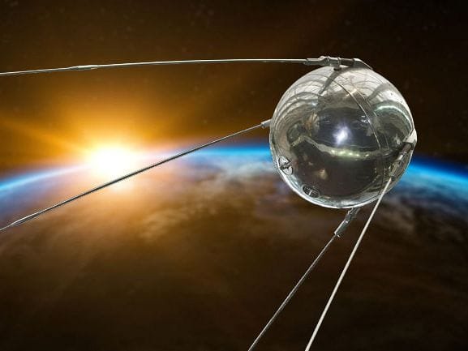
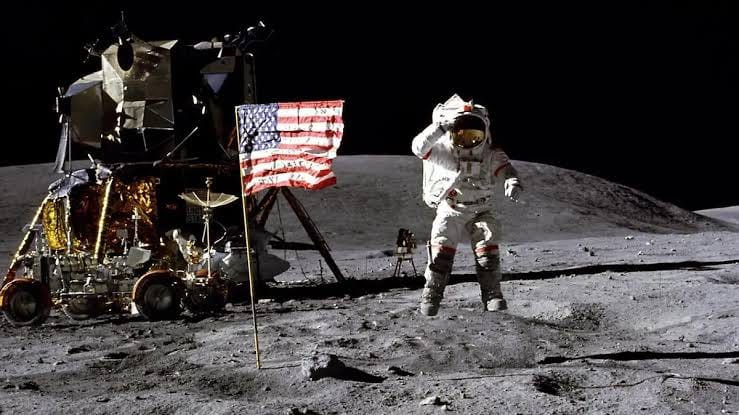
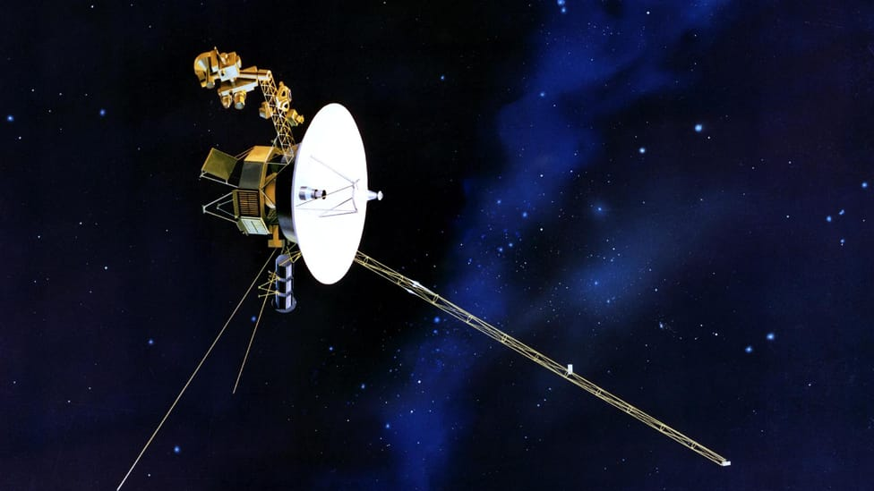
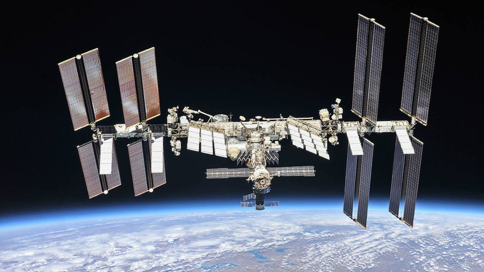
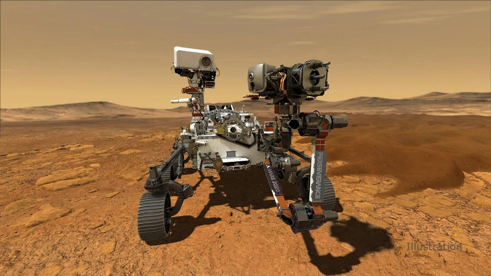
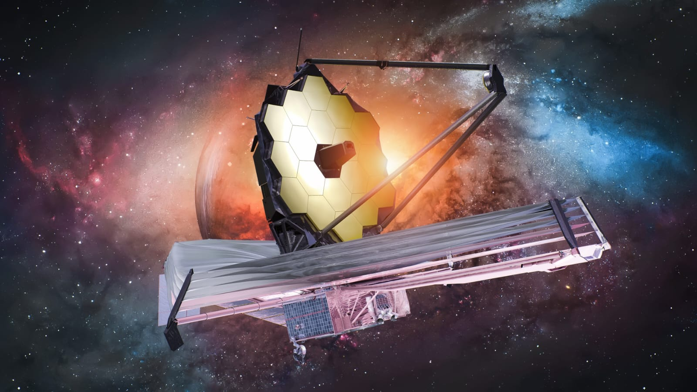

Sputnik 1
Fue el primer satélite artificial en orbitar la Tierra en 1957. Inició formalmente la Era Espacial y desencadenó la carrera espacial entre la Unión Soviética y Estados Unidos.

Algunas misiones que marcaron la historia de la humanidad.

Fue el primer satélite artificial en orbitar la Tierra en 1957. Inició formalmente la Era Espacial y desencadenó la carrera espacial entre la Unión Soviética y Estados Unidos.

Fue la misión espacial de la NASA que logró el primer alunizaje tripulado en la historia de la humanidad. En 1969, Neil Armstrong y Buzz Aldrin caminaron sobre la Luna, un logro histórico de la exploración humana.

Fueron lanzadas por la NASA en 1977 para explorar los planetas exteriores (Júpiter, Saturno, Urano y Neptuno). En 2012, la Voyager 1 se convirtió en el primer objeto hecho por el hombre en entrar al espacio interestelar.

La Estación Espacial Internacional (ISS por sus siglas en inglés) es un laboratorio de investigación en órbita terrestre baja y uno de los mayores logros de cooperación científica internacional en donde equipos internacionales realizan investigaciones científicas en microgravedad.

Un astromóvil marciano o rover es un vehículo robótico diseñado para desplazarse por la superficie del planeta Marte con el fin de estudiar su geología, su clima, buscar indicios de vida pasada y buscan pistas sobre la historia del planeta.

Es el observatorio espacial más avanzado jamás construido desde 2021, capaz de capturar la luz de las primeras galaxias formadas tras el Big Bang y analizar la atmósfera de exoplanetas lejanos.